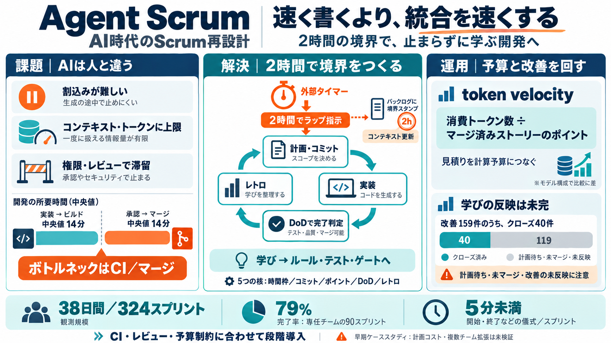

The Training and Development of Elite Sprint Performance: an Integration of Scientific and Best Practice Literature
The “long-to-short” periodization model is typically applied by long-sprint specialists . This approach focuses on long …

AIコーディングエージェントの複数チームが「止まらずに学びながら」開発するための、Scrum風スプリント運用です。 コンテキストやトークン制約を前提に、時間枠と締切執行を作り直します。
Scrumは人の「会議・注意・割込み」に最適化されがちですが、AIは疲れない一方でコンテキスト枠（記憶領域）や トークン使用量、権限制御で実行が詰まります。
人間のScrumは“会話と判断”で進みますが、Agent Scrumは「スプリント境界でコンテキストを更新」するための設計です。 境界を守ることで、品質低下や無限実行を抑えます。
Scrumの中核（時間枠・コミットバックログ・ポイント見積り・完了条件・レトロ）を保持しつつ、前提の違いを置換します。
実装環境で38日間に324件の2時間スプリントを実行し、運用上の効果とボトルネックを観察しました。 特定条件（専任チームエージェントが走った90スプリント）で成果が高いことが示されています。
「AIを増やしてコードを書かせれば速くなる」という単純化は効きにくく、承認後のCIゲートとマージ処理が支配します。 重要な改善点は“統合のレイテンシ”です。
Agent Scrumはレトロを“複合（compound）エンジニアリング”として設計し、課題をルール・テスト・ゲートへ落とします。 しかし実データでは改善アクションの未クローズが多数で、反映速度が追いついていない可能性が示唆されます。
スプリント実行中は基本的に人の待ちが起きにくい一方、計画フェーズは待ちが発生し得ます。 また、承認はあってもマージされない（マージテール）が進捗の見かけを歪め、スループットを伸ばしにくくします。
エージェントは途中で割り込めないため、タイムボックスの“運用”だけでは破綻しやすいです。 そこで締切をバックログに埋め込む境界スタンプと、エージェント外のタイマーでラップ指示する多層構造にします。
token velocity（トークン・ベロシティ）は「マージされたストーリーのポイント1あたりに消費されたトークン数」です。 人間組織のベロシティに相当し、モデル使用量（トークン）がボトルネックになるためコスト指標として導入されます。
Agent Scrumは、AIが止まらないようにする締切執行と、権限・コンテキスト・統合を分けるガバナンスを具体化した雛形です。 一方で、計画コストの未実測・改善アクション未クローズ・複数チーム拡張の未検証が残ります。
本デッキは、ユーザー提示テキスト（Agent Scrumの要約・観測・FAQ・所見）に基づく圧縮です。 原典ページの特定情報（URL等）は入力に含まれていないため、具体文献を列挙できません。
The “long-to-short” periodization model is typically applied by long-sprint specialists . This approach focuses on long …
Sprinting is the ultimate expression of power, coordination and athleticism. If you sprint well, you are by definition a…